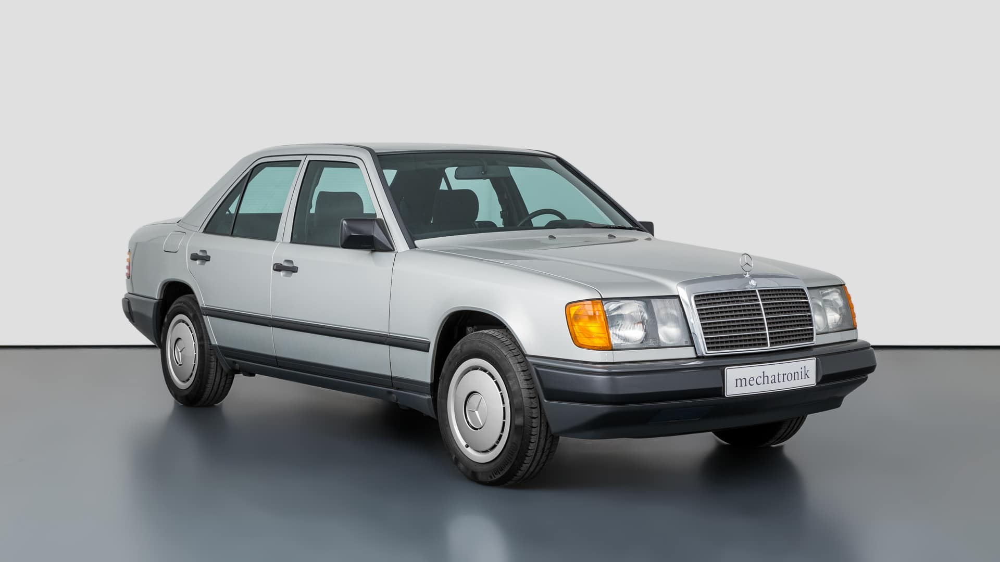
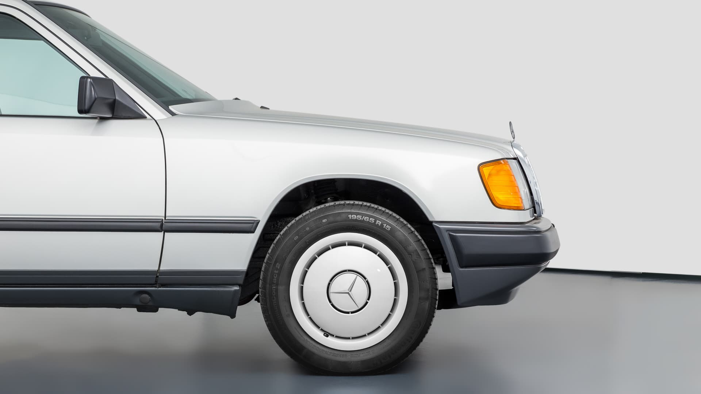
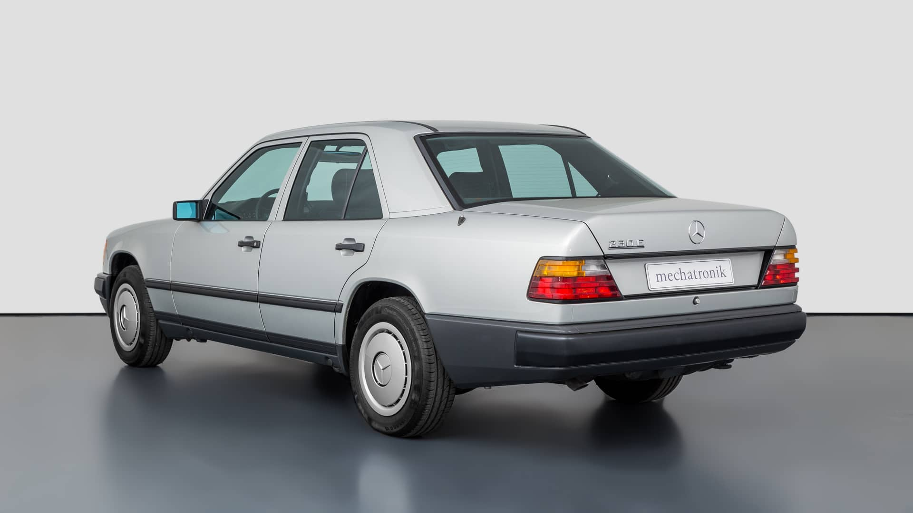
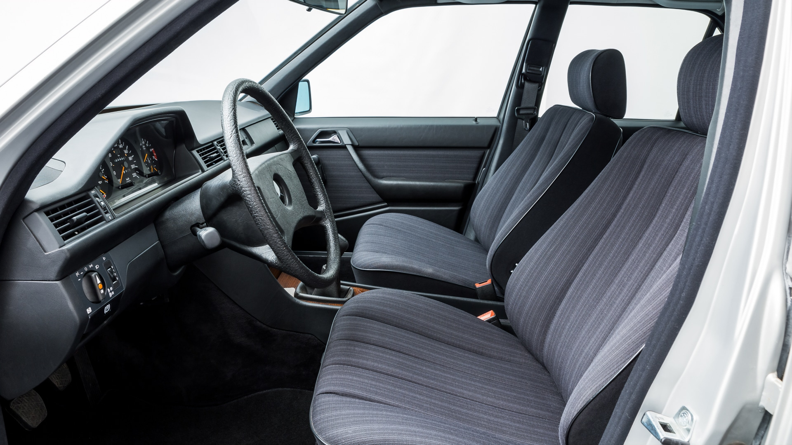
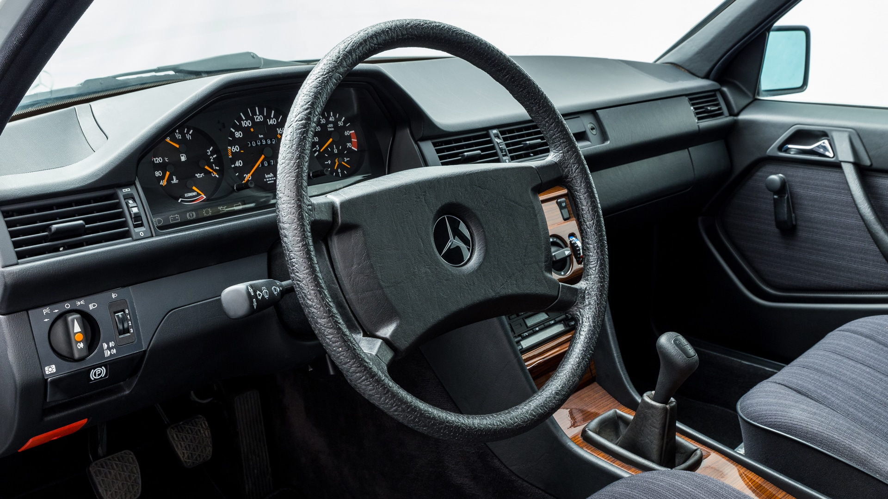
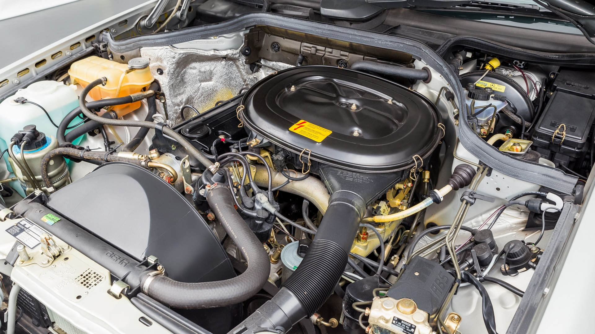

Mercedes-Benz W124 230e sprzedany! Nie byłoby w tym nic specjalnego, gdyby nie jego stan... Przedstawiamy historię auta z 1987 roku.
KLASYKAMI.PL
4 STYCZNIA 2023
Mercedes-Benz to na pewno najbardziej popularna marka wśród youngtimer’ów w naszym kraju. Nie ma nawet co na ten temat dyskutować. Za to W124 jest chyba najpopularniejszym modelem i ta popularność jest tak duża, że jeśli ktoś spyta, który model moglibyśmy nazwać „polskim mercedesem”, bez zająknięcia odpowiemy „Baleron”. Jeszcze do niedawna była okazja kupna W124 230E z pierwszej serii za astronomiczną kwotę. Nie byłoby w tym nic specjalnego, gdyby nie stan i co ważniejsze, przebieg.
Zanim przejdziemy do bohatera tego krótkiego tekstu, krótka informacja. Pewnie zauważyliście, że od ostatniego wpisu minęło już dużo czasu. Zbyt dużo. Trzeba zetrzeć kurz, który pokrył blog motoryzacyjny pod adresem klasykami.pl. Ten zastój nam się nie podoba, ale czasami tak chyba musi być. Działamy. Tyle (na razie) o zastoju i wracamy do Mercedesa, który przez wielu uważany jest za najlepszy model tej marki.
Legendarna taksówka, niezniszczalna limuzyna
Przez wielu uznawany jest za najlepszy model, choć ja uważam że złoto należy się klasie S, a dokładniej modelowi W126. Z drugiej strony, jak wiele Mercedesów, 124 jest trochę nudny. Wszyscy je uwielbiamy za niezawodność, zapach, klekot i ten stajl, ale wielkich emocji ciężko doszukiwać się w przedstawionym aucie. Po co właściwie wpis o nudnym Mercedesie? Bo ten konkretny wcale nie jest taki nudny. Jeszcze kilka dni temu był na sprzedaż, to po pierwsze, jak wiele baleronów. Ale cena oraz stan licznika sprawia, że jest to naprawdę jedyny taki 124. Naprawdę! Nie jest to oferta z Otomoto „jedyny taki”.


Mercedes 230E z przebiegiem poniżej tysiąca kilometrów?
To możliwe!
No właśnie. Przebieg auta to dokładnie 995 kilometrów. W takich momentach od razu zadaję sobie pytanie, jak to się stało i jaka jest historia tego samochodu? Przecież 124 z mizernym przebiegiem z silnikiem M102, który został przeszczepiony jeszcze z poprzednika, powinien kręcić licznik drugi raz, bok fotela kierowcy powinien już nie istnieć, a samochód powinien dalej sprawiać radość z pokonywania kolejnych kilometrów. Serio, nudny Mercedes może sprawiać radość.
Początkowo 124 nie był klasą E, a był swego rodzaju „klasą środkową”. Egzemplarz pochodzi z 1987 roku i nie jest żadną rzadkością. Sprzedano go w milionach egzemplarzy. Srebrny W124 trafił do salonu w Brunszwiku, gdzie służył jako pojazd wystawowy. Tak było przez rok, po czym zdecydowano o przechowaniu samochodu w magazynie. Chyba ktoś o nim zapomniał, ponieważ ten 230E przestał tak 33 lata. Dealer odkrył samochód w marcu 2021 i wystawił go na sprzedaż. Cena? Zbliżona bardziej do modelu 500E, a nie gołego 230E. Nowy właściciel za nowe 34-letnie W124, musiał zapłacić prawie 50 tysięcy euro, a dokładnie 49 500€.

Halo, halo! Mam Mercedesa 124 do sprzedania! Przejechane zaledwie 995 kilometrów.
Czy to dużo? Dużo! Czy jest wart tej ceny? Tak! Nie jest to najciekawszy Mercedes świata i nie jest to najszybsze 124, ale jest to jedyny nowy 124 z takim przebiegiem, który do niedawana mogliście kupić. Nie da się wycenić takiego pomnika historii i zapewne nie było kolejki chętnych, ale jeśli już ktoś się zdecydował, na pewno będzie mógł się pochwalić jedynym takim 124 na świecie. No, może nie jedynym, bo na pewno wśród milionów egzemplarzy są takie, które przejechały 600 kilometrów, ale na pewno jest to unikat na skalę światową. Fani Mercedesa 124 byliby zachwyceni.

PEŁNA GALERIA ZDJĘĆ






DOŁĄCZ DO DYSKUSJI